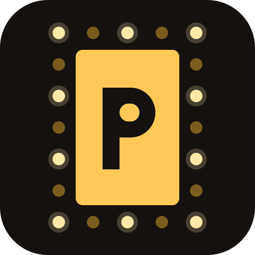

PosterLight
Now showing at home.
Enter the setup code
Look at the PosterLight window on the helper computer. It shows a 6-digit setup code.
Connect to your Plex server
Sign in on Plex's own page. PosterLight never sees your password.
Waiting for you to sign in. A Plex page opened in a new tab. Open it again
Enter the address and token by hand instead
Choose your Plex server
PosterLight is connected
The helper now follows your Plex server.
Next, open this address on each tablet or phone, and add it to the home screen:
PosterLight is a community project. It is not affiliated with Plex.